I-Projection Results
Steven
2025-09-09
Overview
Under the hood
What this analysis does
Loads a RoBERTa (a LLM) to embed participant text into high-dimensional vectors.
Defines psychological axes (valence, ability) using controlled “I am” / “I feel” statements; each axis is the normalized difference between mean embeddings of positive vs. negative statements.
This allows us to capture the psychological dimensions of interest in the embedding space (i.e., good-bad and able-unable).
Projects target words (e.g., I, me, my) onto these axes by computing the dot product between each word’s embedding and the axis vector, capturing how strongly that word aligns with a psychological dimension.
Aggregates these projections at the text level to create text-level measures of valence and ability projections for each participant, which we can then use for down-stream analyses.
I Change over time (am, feel, & combined)
Note. Data are aggregated at the assessment level and coefficients are unstandardized
I_projection_valence_am
I_projection_valence_am individual variation
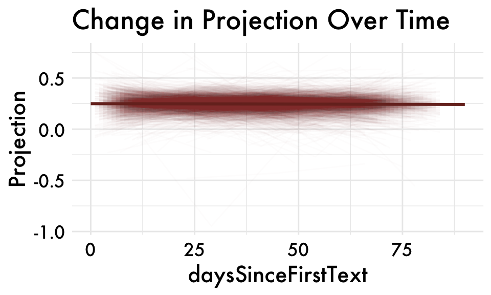I_projection_valence_am spline fit
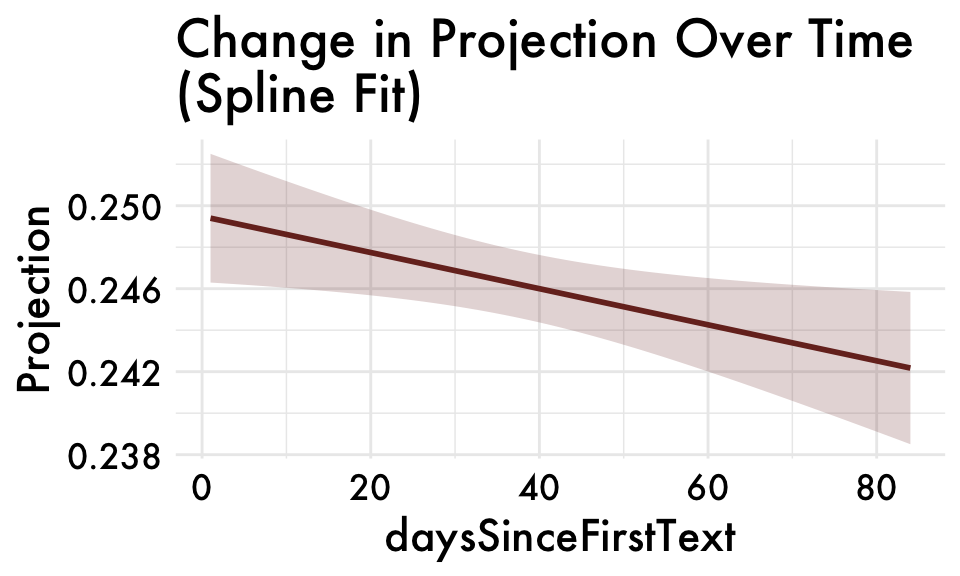I_projection_valence_feel
I_projection_valence_feel individual variation
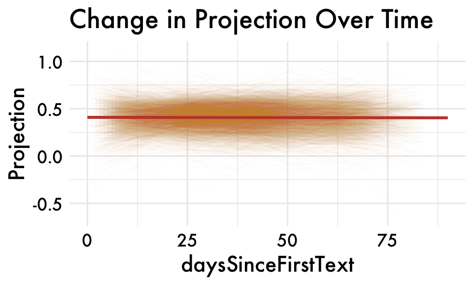I_projection_valence_feel spline fit
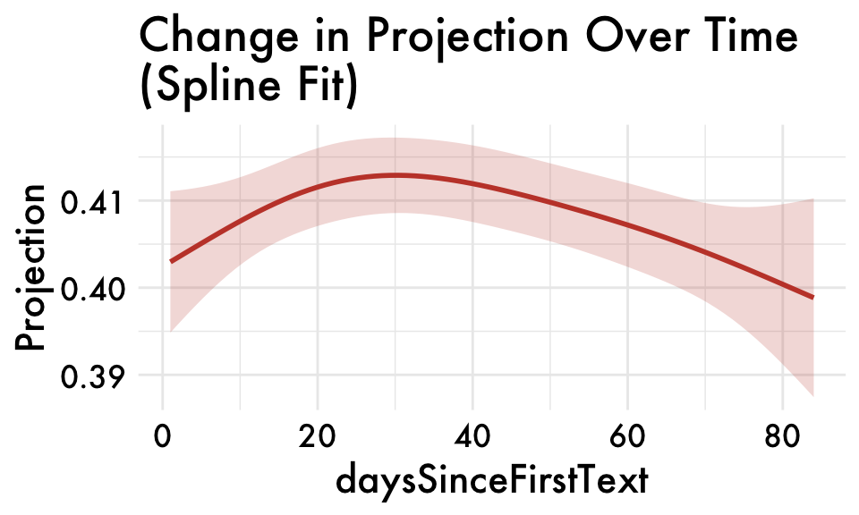I_projection_valence_combined
I_projection_valence_combined individual variation
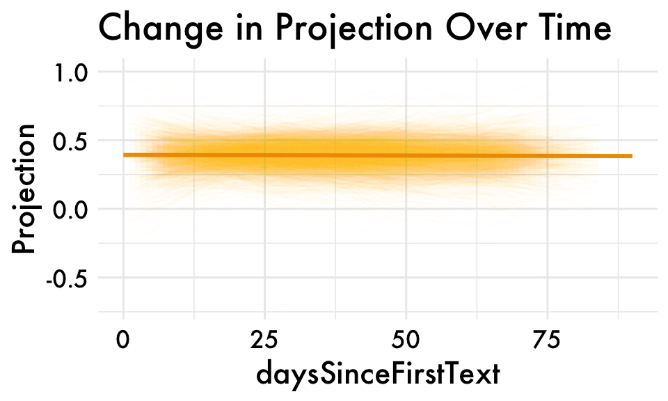I_projection_valence_combined spline fit
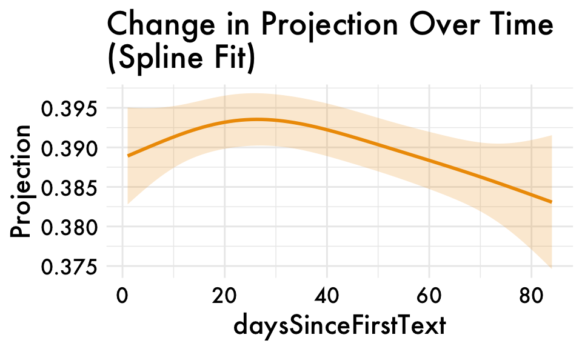First-person sing. valence projections (am, feel, & combined)
Note. Data are aggregated at the assessment level and coefficients are unstandardized.First person sing. = means of I, me, and my projections for each participant.
first_person_sing_valence_feel
first_person_sing_valence_feel individual variation
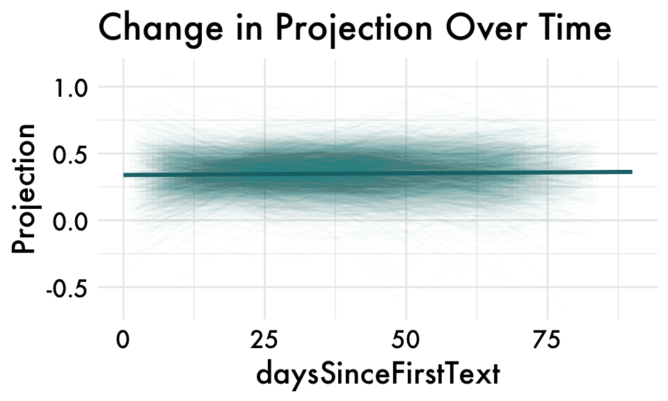first_person_sing_valence_feel spline fit
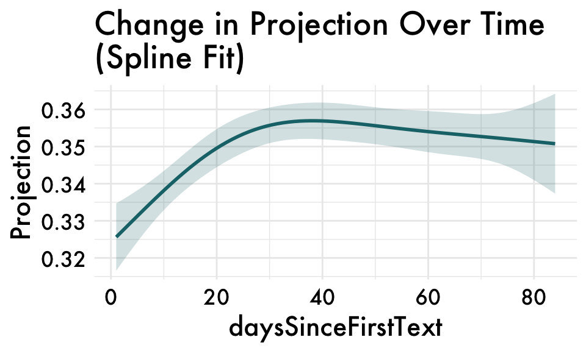first_person_sing_valence_am
first_person_sing_valence_am individual variation
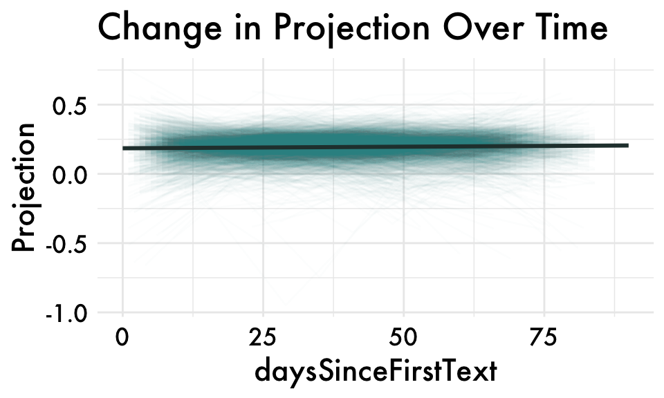first_person_sing_valence_am spline fit
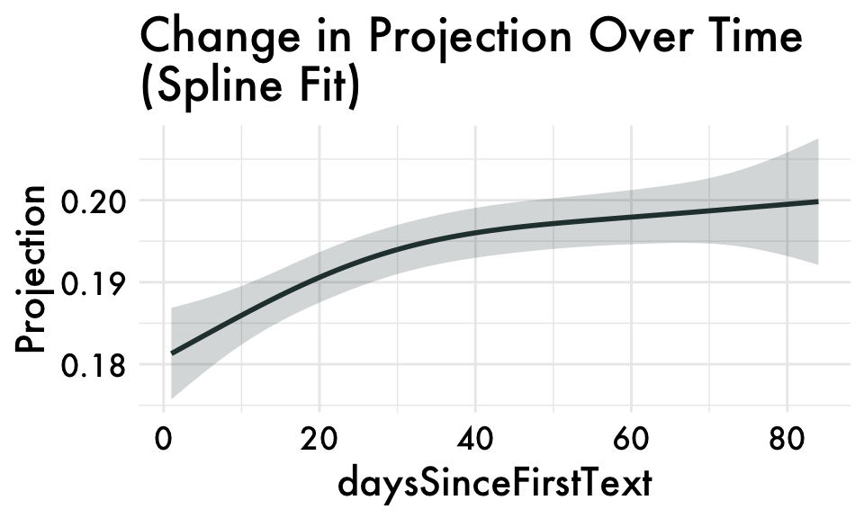first_person_sing_valence_combined
first_person_sing_valence_combined individual variation
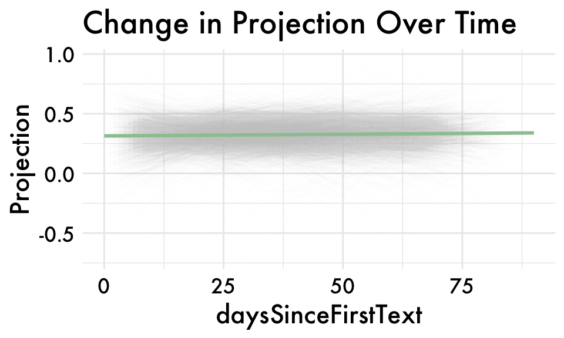first_person_sing_valence_combined spline fit
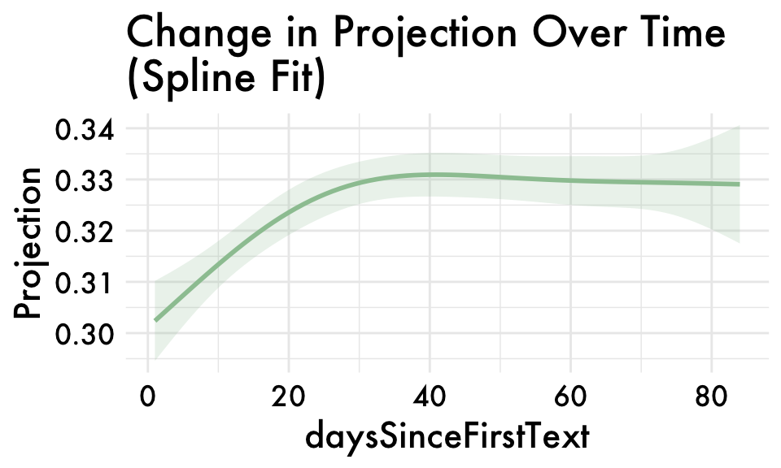First-person sing. able projections (am, feel, & combined)
Note. Data are aggregated at the assessment level and coefficients are unstandardized.First person sing. = means of I, me, and my projections for each participant.
first_person_sing_ability_am
first_person_sing_ability_am individual variation
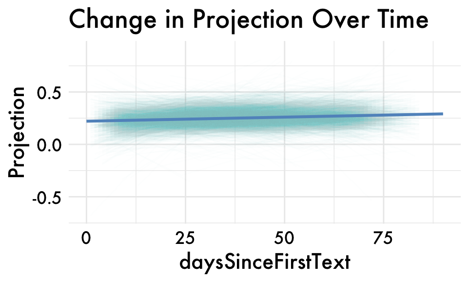first_person_sing_ability_am spline fit
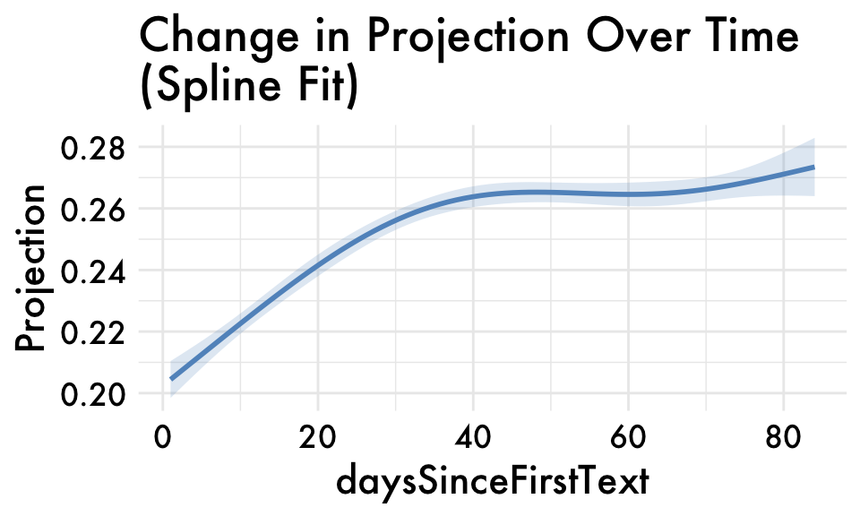first_person_sing_ability_feel
first_person_sing_ability_feel individual variation

first_person_sing_ability_feel spline fit
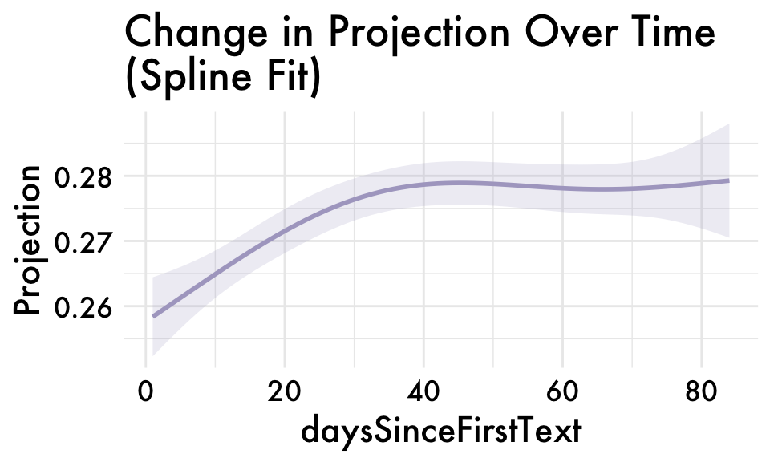first_person_sing_ability_combined
first_person_sing_ability_combined individual variation
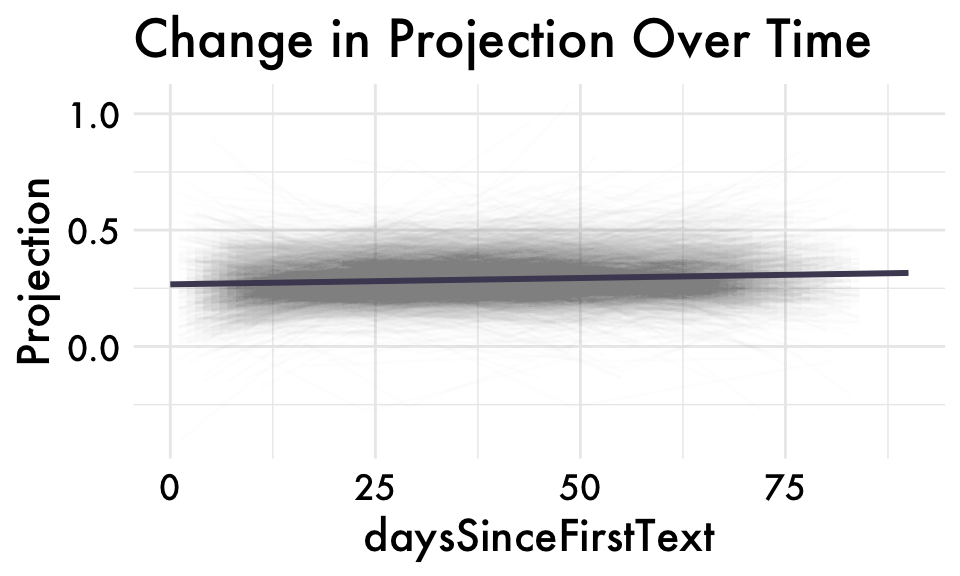first_person_sing_ability_combined spline fit
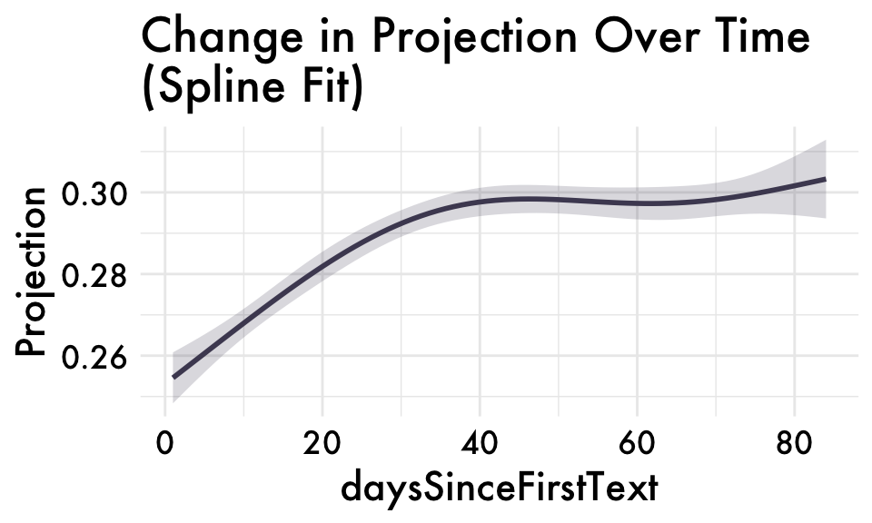Relate the first-person singular projections to internalizing symptoms
Results are condensed to be for the first-person singular valence and ability projections only (combined).
Valence Projection
Ability Projection
Controlling for other linguistic predictors of internalizing symptoms
Results are condensed to be for the first-person singular valence and ability projections only (combined).
% words
Controlling for freq. of words used to construct our axes.
Valence Projections
Ability Projections
Sentiment and Total WC
Controlling for sentiment scores, emotion words (LIWC), and total word count.
Valence Projections
Good-bad Sentiment and Total WC model summary (Disagg):# A tibble: 14 × 10
effect term estimate std.error statistic df p.value conf.low conf.high
<chr> <chr> <dbl> <dbl> <dbl> <dbl> <dbl> <dbl> <dbl>
1 fixed (Inter… -0.00480 0.0134 -0.360 3533. 7.19e- 1 -0.0310 0.0214
2 fixed daysSi… -0.266 0.00614 -43.3 8264. 0 -0.278 -0.254
3 fixed first_… -0.0460 0.0144 -3.19 3600. 1.44e- 3 -0.0744 -0.0177
4 fixed first_… -0.0248 0.00689 -3.60 7781. 3.22e- 4 -0.0383 -0.0113
5 fixed emo_po… -0.0337 0.00795 -4.24 7824. 2.30e- 5 -0.0493 -0.0181
6 fixed emo_po… -0.0219 0.0175 -1.25 3618. 2.11e- 1 -0.0562 0.0124
7 fixed emo_ne… 0.0146 0.0109 1.34 7810. 1.81e- 1 -0.00681 0.0360
8 fixed emo_ne… -0.00537 0.0324 -0.166 3587. 8.68e- 1 -0.0689 0.0581
9 fixed tone_p… -0.0132 0.00807 -1.64 7824. 1.01e- 1 -0.0291 0.00259
10 fixed tone_p… -0.0660 0.0205 -3.22 3658. 1.28e- 3 -0.106 -0.0259
11 fixed tone_n… 0.0134 0.0110 1.22 7808. 2.23e- 1 -0.00815 0.0350
12 fixed tone_n… 0.209 0.0327 6.38 3577. 2.03e-10 0.145 0.273
13 fixed n_tota… 0.0121 0.00688 1.75 7812. 7.97e- 2 -0.00143 0.0256
14 fixed n_tota… -0.0153 0.0135 -1.14 3533. 2.56e- 1 -0.0418 0.0111
# ℹ 1 more variable: outcome <chr>